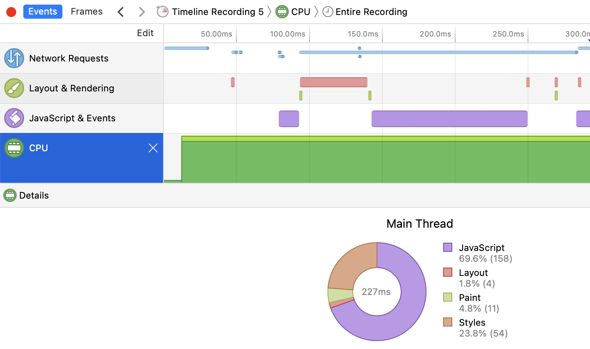

Overview
复习
- 状态机：理论
- 数字电路：logisim.c 和 seven-seg.py
- Model checker: 理解并发程序执行的新方法
- 状态机：实践
本次课回答的问题
- Q: 状态机模型如此有用，还能更有用一点吗？
本次课主要内容
- 终于做完了铺垫，是时候让你感受到 “真正的力量” 了
- 都是没用的内容，当我口胡就行了
状态机：理解我们的世界
哲 ♂ 学探讨
我们的物理世界是 “确定规则” 的状态机吗？
- 宏观物理世界近似于 deterministic 的状态机 (经典力学)
- 微观世界可能是 non-deterministic 的 (量子力学)
把物理世界建模成基本粒子的运动
哲 ♂ 学探讨 (cont'd)
可以在这个模型上严肃地定义很多概念：预测未来、时间旅行……
- 成为你理解物理 (和计算机) 世界的参考
例子
- Cellular automata 不支持 “时间旅行”
- 怎么添加一个公理使它可以支持？
- 平行宇宙
- 如果世界线需要合并？可以收敛于某个分布
- 怎么添加一个公理使它可以支持？
- Cellular automata 不支持 “预测外来”
- 能否添加一个 syscall 使它支持？
状态机模型：理解编译器和现代 CPU
编译器：源代码 $S$ (状态机) → 二进制代码 $C$ (状态机) $$C = \textrm{compile}(S)$$
编译 (优化) 的正确性 (Soundness):
$S$ 与 $C$ 的可观测行为严格一致 - system calls; volatile variable loads/stores; termination
超标量 (superscalar)/乱序执行处理器
- 允许在状态机上 “跳跃”
- ilp-demo.c
查看状态机执行
Trace 和调试器
程序执行 = 状态机执行
- 我们能不能 “hack” 进这个状态机
- 观察状态机的执行
- strace/gdb
- 甚至记录和
改变 状态机的执行
- 观察状态机的执行
应用 (1): Time-Travel Debugging
程序执行是随时间 “前进” 的 $ s_0 \to s_1 \to s_2 \to \ldots $
- 能否在时间上 “后退”？ (time-travel)
- 经常 gdb 不小心 step 过了，从头再来……
- 记录所有的 $s_i$，就能实现任意的 time-traveling
记录所有 $s_i$ 的开销太大 ($s_i$ 由内存 + 寄存器组成)
- 但
一条指令的 side-effect 通常有限 - 只记录初始状态，和每条指令前后状态的 diff
- $s_0, \Delta_0, \Delta_1, \ldots $
- 正向执行：$s_{i+1} = s_i + \Delta_0$
- 反向执行：$s_{i-1} = s_i e \Delta_0^{-1}$
应用 (1): Time-Travel Debugging (cont'd)
gdb 的隐藏功能 (大家读过 gdb 的手册了吗？)
record full- 开始记录record stop- 结束记录reverse-step/reverse-stepi- “时间旅行调试”
例子：调试 rdrand.c
- Reverse execution 不是万能的
- 有些复杂的指令 (syscall) 无法保证
应用 (2): Record & Replay
在程序执行时记录信息，结束后重现程序的行为
- 确定的程序不需要任何记录
- 假设 $s_0$ 执行 1,000,000 条确定的指令后得到 $s'$
- 那么只要记录 $s_0$ 和 1,000,000
- 就能通过 “再执行一次” 推导出 $s'$
- 假设 $s_0$ 执行 1,000,000 条确定的指令后得到 $s'$
应用 (2): Record & Replay (cont'd)
Record & Replay: 只需记录 non-deterministic 的指令的
- (单线程) 应用程序
- syscall, rdrand, rdtsc, ...
- rr (Mozilla)
- (单处理器) 操作系统
- mmio, in, out, rdrand, rdtsc, 中断, ...
- QEMU (
-icount shift=auto,rr=record,rrfile=replay.bin)- ReVirt: Enabling intrusion analysis through virtual-machine logging and replay (OSDI'02, Best Paper 🏅)
采样状态机执行
关于性能优化
Premature optimization is the root of all evil. (D. E. Knuth)
那到底怎么样才算 mature 呢？
- 状态机的执行需要时间；对象需要占用空间
- 需要理解好 “时间花在哪里”、“什么对象占用了空间”

我们需要真实执行的
- 本质的回答：“为了做某件事到底花去了多少资源”
- 简化的回答：“一段时间内资源的消耗情况”
Profiler 和性能摘要
性能摘要需要对程序执行性能影响最小，往往不需要 full trace。
隔一段时间 “暂停” 程序、观察状态机的执行
- 中断就可以做到
- 将状态 $s \to s'$ “记账”
- 执行的语句
- 函数调用栈
- 服务的请求
- 得到统计意义的性能摘要
例子：Linux Kernel perf (支持硬件 PMU) - ilp-demo.c
- perf list, perf stat (-e), perf record, perf report
实际中的性能优化
你们遇到的大部分情况
- 二八定律：80% 的时间消耗在非常集中的几处代码
- L1 (pmm): 小内存分配时的 lock contention
- profiler 直接帮你解决问题
工业界遇到的大部分情况
- 木桶效应：每个部分都已经 tune 到局部最优了
- 剩下的部分要么 profiler 信息不完整，要么就不好解决
- (工程师整天都对着 profiler 看得头都大了)
- The flame graph (CACM'16)
Model Checker/Verifier
Model Checker 的威力大家已经知道了
150 行代码的 model-checker.py
- 证完所有《操作系统》课上涉及的并发程序
- 复现 OSTEP 教科书上的并发 bug (条件变量错误唤醒)
一些真正的 model checkers
- TLA+ by Leslie Lamport;
- Java PathFinder (JFP) 和 SPIN
- 它们都喜欢用 Peterson 算法做 tutorial 😁
Model Checker: 不仅是并发
任何 “non-deterministic” 的状态机都可以检查
u32 x = rdrand();
u32 y = rdrand();
if (x > y)
if (x * x + y * y == 65)
bug();
...
assert(ptr); // 可能空指针吗？
更高效的 Model Checker: “将相似状态合并”
- KLEE: Unassisted and automatic generation of high-coverage tests for complex systems programs (OSDI'08, Best Paper 🏅)
- 基于 LLVM bitcode 解释器实现
总结
总结
本次课回答的问题
- Q: 状态机的视角给了我们什么？
Take-away messages
- 编程 (状态机) 就是全世界
- 状态机可以帮我们
- 建立物理世界的公理体系
- 理解调试器、Trace, profiler
- 自动分析程序的执行 (model checker)